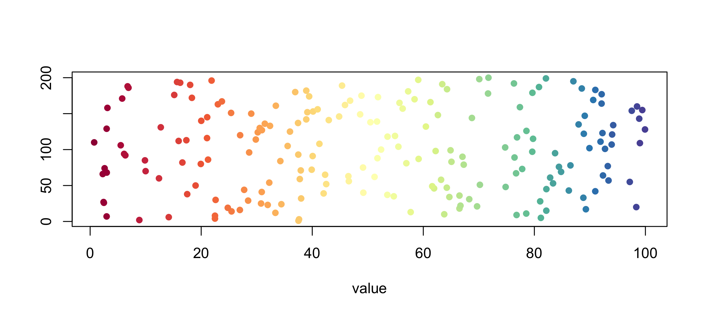
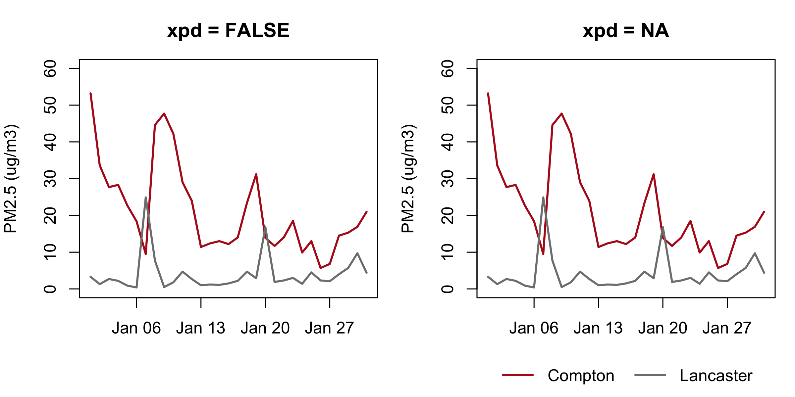
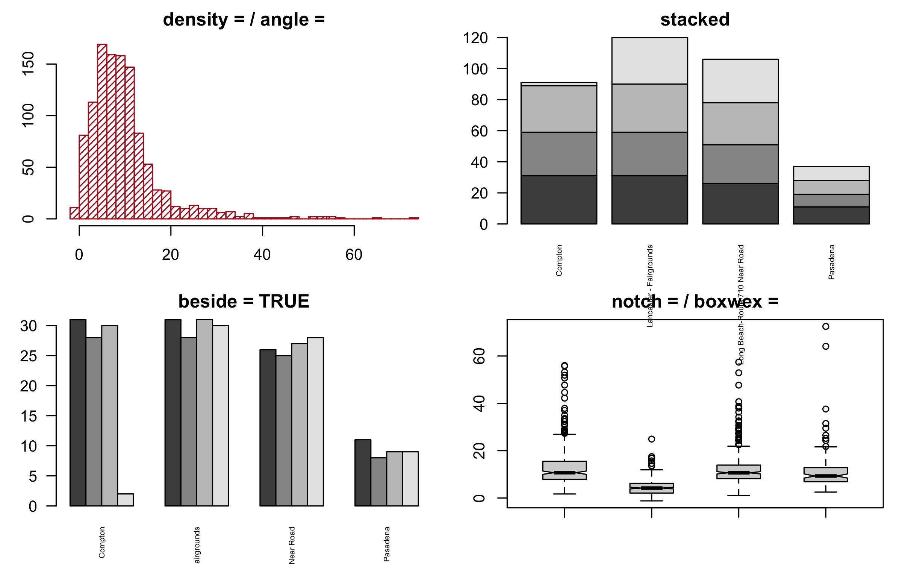
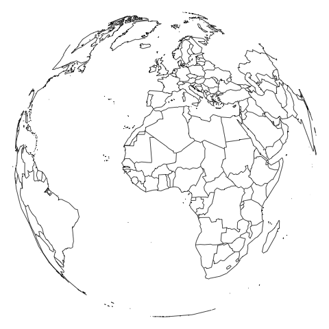

op <-par(mar =c(3, 4, 2, 1))layout(matrix(c(1, 1, 2, 3), nrow =2, byrow =TRUE), heights =c(2, 1))plot(comp$date, comp$pm25, type ="o", xlim = xr,xlab ="", ylab ="PM2.5 (ug/m3)", main ="Compton, January 2025")hist(d$pm25[d$site =="Compton"], breaks =seq(-5, 60, by =5),main ="Compton, all year", xlab ="")hist(d$pm25[d$site =="Lancaster - Fairgrounds"], breaks =seq(-5, 60, by =5),main ="Lancaster, all year", xlab ="")layout(1)par(op)
Two settings were changed, so two get put back — layout(1) first, then par(op). The two histograms share breaks = seq(-5, 60, by = 5), which spans both stations and keeps them comparable.
rect() takes the four edges, and adjustcolor(col, alpha.f = ) makes any colour translucent so the data still shows through. All four edge arguments are vectorised, so one call can shade many windows.
polygon() takes one closed ring of coordinates. The idiom is x forwards then x backwards, upper forwards then lower backwards — that traces the band’s outline in one loop. Every confidence band, event-study plot and dose-response figure you will ever draw is this shape.
# Three minutes. "A layout in use" put the January line on top of the two# histograms. Turn it on its side.## 1. Write the matrix() call that stacks the two histograms on the LEFT and# gives the January line one tall panel on the RIGHT. The line is still# drawn first.# 2. Check it with layout.show(3) before you draw anything.# 3. Make the right column twice as wide as the left. Which argument?## Two answers to compare with the room: your matrix, and one argument name.
brewer.pal(n, name) gives a designed palette (display.brewer.all() shows them all), colorRampPalette() interpolates it to any length, and findInterval() turns a numeric column into positions in that palette. Those three lines are how every choropleth and heat map gets its colours.
Colour scales

Custom axes
op <-par(mar =c(3, 4, 1, 1))plot(comp_y$date, comp_y$pm25, type ="l", col ="grey30",axes =FALSE, xlab ="", ylab ="")firsts <-as.Date(paste0("2025-", sprintf("%02d", 1:12), "-01"))axis(1, at = firsts, labels = month.abb)axis(1, at = firsts +15, tck =-0.01, lwd =0, lwd.tick =1, labels =FALSE)axis(2, las =2)box()mtext("PM2.5 (ug/m3)", side =2, line =2.5)par(op)
axes = FALSE suppresses both axes so you can draw your own. A second axis() call on the same side with labels = FALSE and a small tck gives minor ticks. box() puts the frame back.
Clipped away silently — the left legend() ran and produced nothing.
FALSE the plot region, TRUE the panel’s own margins, NA the device.
par(xpd = NA) sets it for everything after.
par(xpd): drawing outside the plot region

Fills, shapes, and options
op <-par(mfrow =c(2, 2), mar =c(3, 3, 2, 1))hist(d$pm25, breaks =30, col ="#b31b1b", density =25, angle =45,border ="#b31b1b", main ="density = / angle =", xlab ="")m <-table(format(d$date, "%m"), d$site)[1:4, ]barplot(m, col =grey.colors(4), main ="stacked", las =2, cex.names =0.5)barplot(m, col =grey.colors(4), beside =TRUE, space =c(0, 2),main ="beside = TRUE", las =2, cex.names =0.5)boxplot(pm25 ~ site, data = d, notch =TRUE, boxwex =0.5,main ="notch = / boxwex =", xlab ="", ylab ="", names =rep("", 4))par(op)
A matrix handed to barplot() stacks by default and sits side by side with beside = TRUE. notch = TRUE cuts a wedge around the median whose width is a rough confidence interval: non-overlapping notches are a hint the medians differ. hist() also returns what it drew — h <- hist(x, plot = FALSE) gives you h$breaks and h$counts as ordinary vectors.
Fills, shapes, and options

Heat maps: image()
mm <-tapply(d$pm25, list(d$site, format(d$date, "%m")), mean)op <-par(mar =c(3, 12, 2, 1))image(t(mm), col =colorRampPalette(c("white", "#b31b1b"))(20), axes =FALSE)axis(1, at =seq(0, 1, length.out =12), labels = month.abb, tick =FALSE)mtext(rownames(mm), side =2, at =seq(0, 1, length.out =4), las =2,cex =0.7, line =0.5)box()par(op)
image() draws a matrix as a grid of coloured cells. Note the t(): image() puts the first matrix dimension on the x axis, so a rows-are-sites matrix has to be transposed to get sites down the side.
# Four minutes. Compton's year as points, coloured by how bad the day was.## 1. Take five colours from the "Reds" Brewer palette.# 2. Put every reading in comp_y into one of five bands, with cut points at# 0, 10, 20, 35 and 55, and plot pm25 against date, one colour per band.# 3. How many days are in the top band, and which colour did they get?## Two answers to compare with the room: a count, and a hex code.
maps ships outlines for "world", "usa", "state" and "county". fill = TRUE with a vector of colours in the same order as the map’s own region names gives you a choropleth; add = TRUE layers one map onto another, exactly like lines() onto a plot.
The orthographic call warns projection failed for some data. That is the projection saying it cannot draw the half of the globe facing away from you, which is the correct answer. Nothing is broken.
A GIF is a folder of PNGs shown in order. Everything in that loop is png() and dev.off() plus a counter; image_read() loads the frames and image_animate() strings them together. image_write(globe, "globe.gif") saves it. Any figure you can draw once you can animate.
Animation

Practice
Fourteen exercises, with solutions, on the page and in the script.
1–3 Unequal panels: read a layout() matrix, fill it, set heights.
4–6 Shaded areas: a window, five bands in one call, overlaid histograms.
7 A fitted curve with its 95% band from polygon().
8–9 Colour scales: a 12-colour Brewer ramp; findInterval() buckets.
10 Custom axes: month names, mid-month ticks, a label with mtext().
11–12 Stacked versus beside bars; notched box plots.
13–14 A site-by-month heat map; four monitors on a map of California.
Quick reference
On the page: every command on this page in one table.